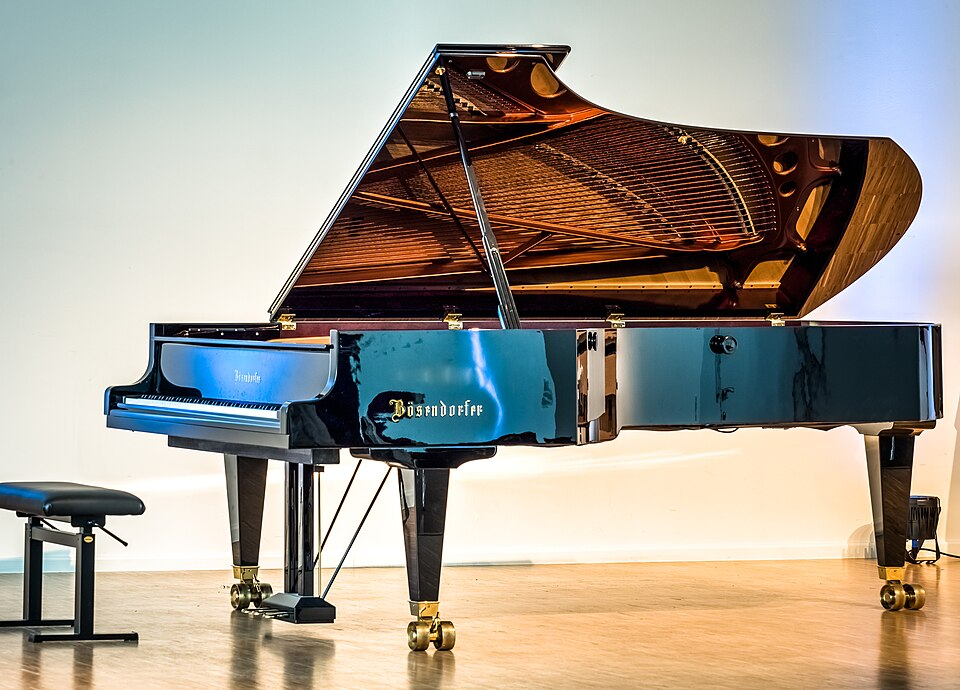

Chi è Lazza
Lazza è il nome d'arte di Jacopo Lazzarini, nato a Milano il 22 agosto 1994. È un rapper e anche un produttore, cioè crea le basi delle canzoni.
Il pianoforte
Da ragazzo ha studiato pianoforte al liceo musicale del Conservatorio Giuseppe Verdi di Milano. Per questo in molte sue canzoni si sente il piano, mescolato con le basi rap.

Gli inizi nel rap
Dopo il conservatorio è passato all'hip hop. Nel 2009 ha partecipato a Tecniche Perfette, una gara di freestyle, e nel 2012 ha pubblicato il suo primo mixtape, Destiny Mixtape, che si poteva scaricare gratis.

Il successo
Il primo album, Zzala, è uscito nel 2017. Poi sono arrivati Re Mida e Sirio, che lo hanno reso famosissimo. Nel 2023 ha partecipato per la prima volta al Festival di Sanremo con la canzone Cenere ed è arrivato secondo.
Premi il bottone
Premi il bottone per saperlo...